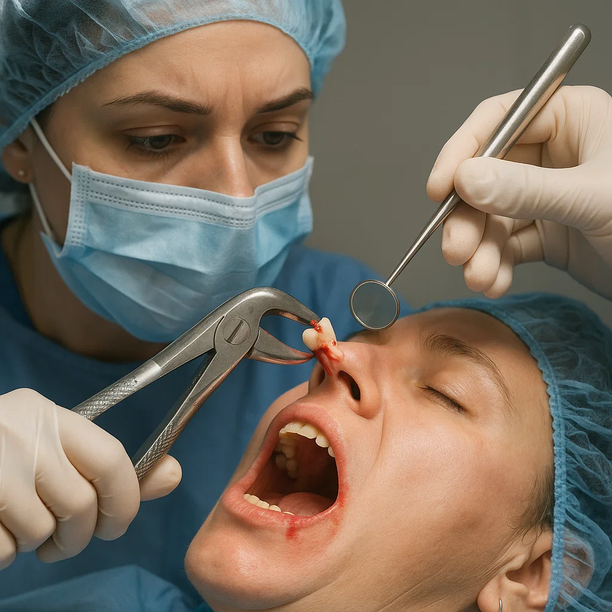

Орална хирургия
Какво е орална хирургия?
Оралната хирургия е специализирана област в стоматологията, която обхваща диагноза и хирургично лечение на заболявания, травми или дефекти в устната кухина, челюстите и лицето. Типичните орално-хирургични процедури включват изваждане на зъби (включително затруднено изваждане на мъдреци), корекция на челюстни деформации, лечение на кисти и тумори, както и поставяне на дентални импланти. Целта на оралната хирургия е да възстанови здравето и функционалността на устата, както и естетиката на лицето, като предотвратява усложнения от неправилно подредени или болни зъби. Всички интервенции се извършват от стоматолог-хирург с подходяща упойка и при необходимост допълнително медикаментозна седация, за да бъде лечението безболезнено и безопасно за Вас.
Как протича хирургична интервенция
Независимо дали става дума за обикновено вадене на зъб или по-сложна операция, процесът минава през няколко основни етапа. Първо се прави клиничен преглед и рентгенова снимка, за да се прецени разположението на зъба и околните тъкани. След това се поставя локална упойка (а при сложни случаи – и седация), за да няма болка по време на процедурата. В стъпките по същинското изваждане зъбът се разхлабва с помощта на специални инструменти и се отстранява от алвеолата. При нужда хирургът може да разреже венец и да раздели зъба на части, за да го премахне по-лесно (например при ретинирани мъдреци). След премахването раната се почиства и при необходимост се зашива, а пациентът захапва марля, за да спре кървенето. Важно е да следвате указанията за следоперативни грижи – обикновено ще получите антибиотична профилактика и съвети за изплакване с антисептичен разтвор. Процедурите са кратки и безопасни, а упойката гарантира Вашия комфорт по време на лечението.
Ползи от оралната хирургия
Хирургичните интервенции решават сериозни проблеми, които не могат да се лекуват по конвенционален начин. Благодарение на оралната хирургия често се предотвратява разпространението на инфекция от един зъб към околните тъкани или кост. Изваждането на силно разрушен или инфектиран зъб защитава останалите здрави зъби и венци от възпаление. Успешната операция Ви позволява да възстановите целостта на зъбната дъга – например чрез поставяне на имплант или мост след изваждането. Много пациенти отбелязват подобрение на общото си състояние след такова лечение, защото хроничният зъбобол и инфекции се премахват. Съвременните анестетици и технологии правят повечето орално-хирургични процедури рутинни и добре понасяни, така че Вие бързо се връщате към нормалния си ритъм на живот.